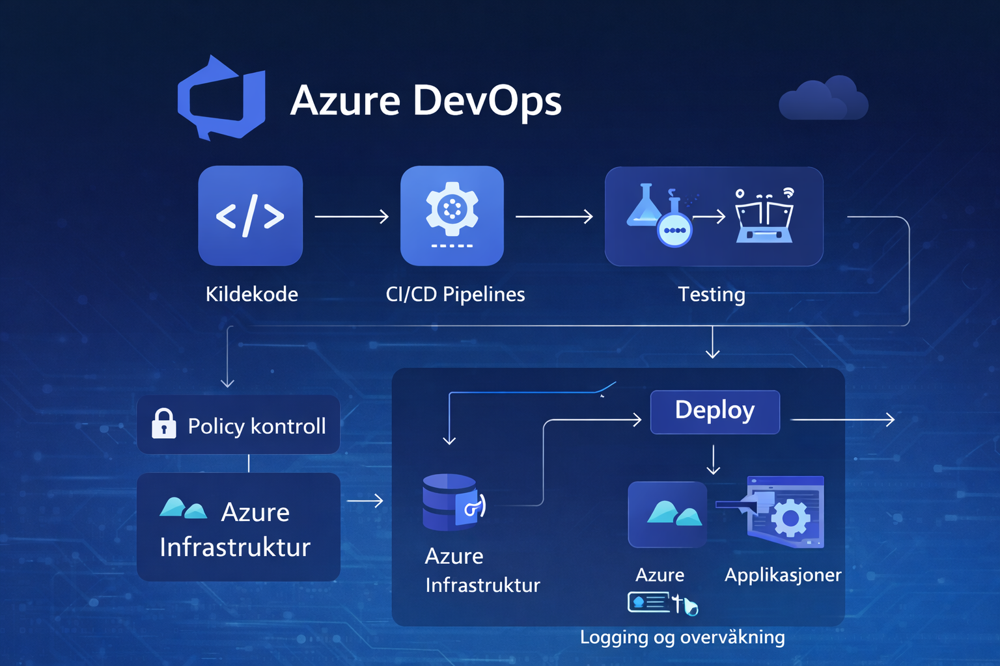
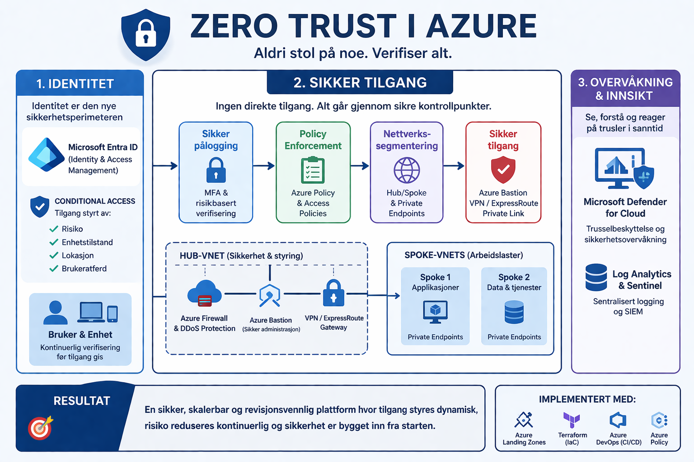
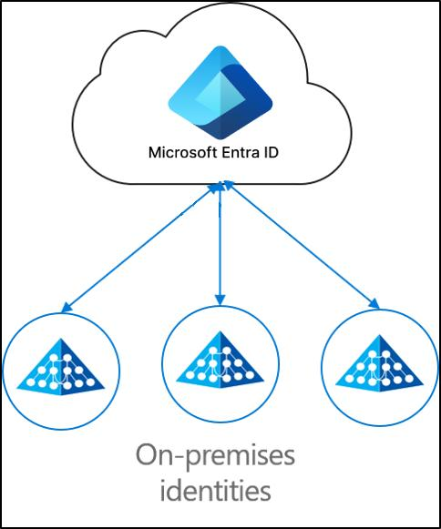

Azure Landing Zones
Et solid fundament i Azure gjør det enklere å bygge sikkert, standardisert og skalerbart.
Struktur fra start
Azure Landing Zones gir en gjennomtenkt struktur for abonnementer, identitet, nettverk, sikkerhet, policyer og styring.
Jeg etablerer plattformsoner som gjør det enklere å vokse uten at miljøet blir uoversiktlig eller personavhengig.

Terraform og IaC
Infrastruktur som kode gir repeterbarhet, sporbarhet og mindre manuelt arbeid.
Automatiser infrastrukturen
Terraform gjør det mulig å bygge og forvalte Azure-miljøer konsistent og kontrollert. Det gir mindre feil, raskere etablering og bedre kvalitet.
Jeg bruker modulbasert struktur og versjonering for å gjøre løsningene lettere å gjenbruke og videreutvikle.

Azure DevOps
Automatiserte pipelines gir tryggere leveranser og bedre flyt fra kode til produksjon.
Bedre leveranseflyt
Azure DevOps gir støtte for planlegging, versjonskontroll, pipelines og strukturert samhandling.
Jeg bruker pipelines til å validere, bygge og rulle ut både infrastruktur og applikasjoner på en kontrollert måte.

Governance
Gode styringsmekanismer gir kontroll på kostnader, sikkerhet, ansvar og etterlevelse.
Kontroll uten å bremse utvikling
Governance handler om å finne balansen mellom frihet og kontroll. Med tydelige prinsipper, policyer og ansvar blir plattformen tryggere og mer forutsigbar.
Jeg jobber med strukturer som støtter standardisering, moden drift og kostnadskontroll.

Sikkerhet
Sikkerhet bør bygges inn i plattformen fra start, ikke limes på etterpå.
Zero Trust og innebygd sikkerhet
Jeg jobber med prinsipper som Zero Trust, minst mulige privilegier, identitetsstyring, segmentering og sikker automatisering.
Målet er bedre synlighet, lavere risiko og tryggere leveranser i praksis.

Hybrid drift
Moderne skyløsninger må ofte fungere godt sammen med eksisterende miljøer.
Bro mellom on-prem og sky
Hybrid drift handler om samspillet mellom identitet, nettverk, sikkerhet og tjenester på tvers av miljøer.
Jeg bygger løsninger som gjør modernisering mulig uten å miste kontroll i eksisterende drift.

CAF
Cloud Adoption Framework gir struktur for hele skyreisen, fra strategi til drift.
Cloud Adoption Framework
CAF hjelper virksomheter med å jobbe helhetlig med strategi, organisering, governance, sikkerhet og plattform.
Jeg bruker CAF som et praktisk rammeverk for å koble tekniske valg til virksomhetens behov og mål.
WAF
Well-Architected Framework bidrar til robuste, sikre og driftbare løsninger.
Well-Architected Framework
WAF brukes for å evaluere og forbedre arkitekturvalg, og hjelper med å balansere krav til pålitelighet, sikkerhet, kostnader, drift og ytelse.
Jeg bruker rammeverket til å kvalitetssikre løsninger før små svakheter blir store problemer.

Prosjekter
Eksempler på arbeid med Azure-plattform, automatisering, governance og optimalisering.
Azure Landing Zone
Design og etablering av strukturert Azure-plattform med fokus på sikkerhet, governance og skalerbarhet.
Terraform og DevOps
Automatisert infrastruktur med Terraform og CI/CD pipelines for kontrollert deploy til flere miljøer.
Feilsøking og kostnadsoptimalisering i Azure
Analyserte eksisterende Azure-miljø og identifiserte ineffektiv ressursbruk, feil dimensjonering og manglende struktur.
Implementerte forbedringer innen governance, overvåkning og ressursstyring, noe som ga bedre ytelse og redusert kostnadsnivå.
Zero Trust sikkerhet
Implementering av sikkerhetsmodell basert på identitet, tilgangskontroll og beskyttelse av sensitive data i Azure.
Hybrid løsning
Integrasjon mellom on-prem miljø og Azure med fokus på identitet, nettverk og sikker tilgang.
Sertifiseringer
Et utvalg relevante sertifiseringer innen Azure, DevOps, Microsoft 365 og infrastruktur.